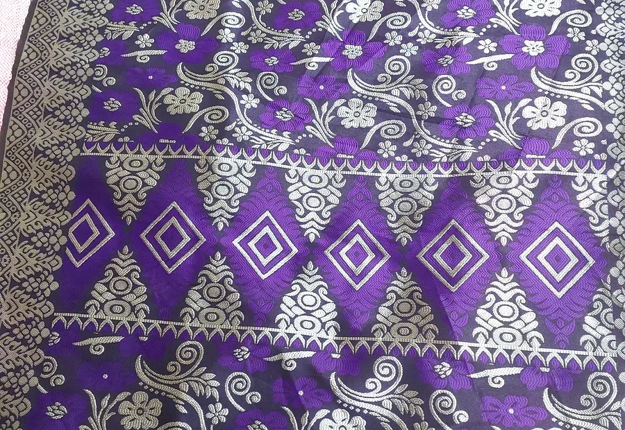

Fabric Requirements
Buyers may share a sample, specification sheet or detailed description. Important details can include woven or knitted construction, fibre content, GSM, usable width, finishing requirements, colour references and packing.
Fabric sourcing and export enquiries for international buyers.
K.K. International welcomes enquiries for textile fabrics and related materials. We aim to establish the fabric construction, fibre composition, weight, width, finish, colour, quantity and destination before coordinating suitable supply discussions.


Buyers may share a sample, specification sheet or detailed description. Important details can include woven or knitted construction, fibre content, GSM, usable width, finishing requirements, colour references and packing.
Once the requirement is understood, we coordinate product information, supplier discussions and commercial details. Final specifications, availability, lead time and shipment terms are confirmed for each order.